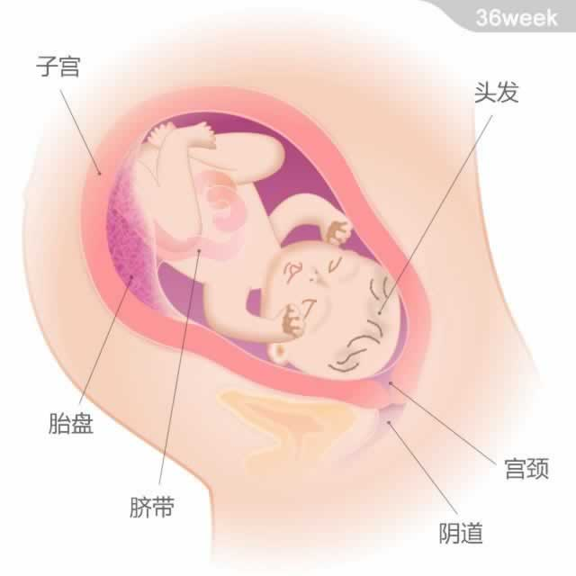

 宝宝的重量约为2.95千克，从头部到臀部的长度约为34厘米。。 本周，宝宝足月了，这意味着他已经为子宫外的生活做好准备，随时可以出生。他的头可能已经进入到妈妈的骨盆腔内，并受到骨盆的支撑。很多宝宝的头上已经长满了头发。 在怀孕的大部分时间里，宝宝会依靠母体的保护来抵御感染了。而现在他正在尝试建立起属于自己的免疫系统，这个免疫系统的发育，会一直持续到宝宝出生后，以帮助他抵御各类感染，并建立起自己的免疫力。